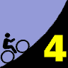
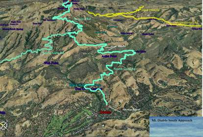

|  |
2007 Low-Key Hillclimbs Week 4: Mount Diablo (S) 20 Oct 2007 |
|  |
| Aerial photo of Mount Diablo (S), courtesy of Stanford Cycling |
The big three of the Bay Area: Mt. Tam: incredibly panoramic, but the climb itself the least challenging. Hamilton: Epic in scale, but in three segments, with roads carefully graded for building an observatory. Then there's Diablo. From the south side: 3170 vertical feet in 11.7 miles of relentless effort, culminating in 250 will-testing meters to the summit.'
Last year, Low-Keyers tackled the longer north slope, from Walnut Creek. This year, back to our more traditional southern stomping grounds. Not quite as long, but still worthy'. of the name Devil Mountain.
Our insurance demands it: helmets are required. Sorry kids, no exceptions!
We'll stage at Athenian School on Mount Diablo Scenic Blvd in Danville.
BART (Walnut Creek station) is recommended.. See BART's web site for details.
If you drive, please park away from the school. then ride in. You need the warm-up, anyway!
| stats | 11.28 miles, 3220 ft, 5.8% |
| format | small groups |
| time | reg 9:15 - 10:00 start 10:10am |
| coordinator | |
| aerial view | Stanford Cycling #1 Stanford Cycling #2 Stanford Cycling #3 Stanford Cycling #4 Stanford Cycling #5 |
| route profile | Lucas Pereira's profile |
| weather | Weather Underground Weather Bonk summit (current) |
| registration form |
PDF release form |
| entry fee | $10 free for juniors 2 free for volunteers free for coordinators |

{kind=link}
{kind=link}
{kind=link}
{kind=link}
{kind=link}